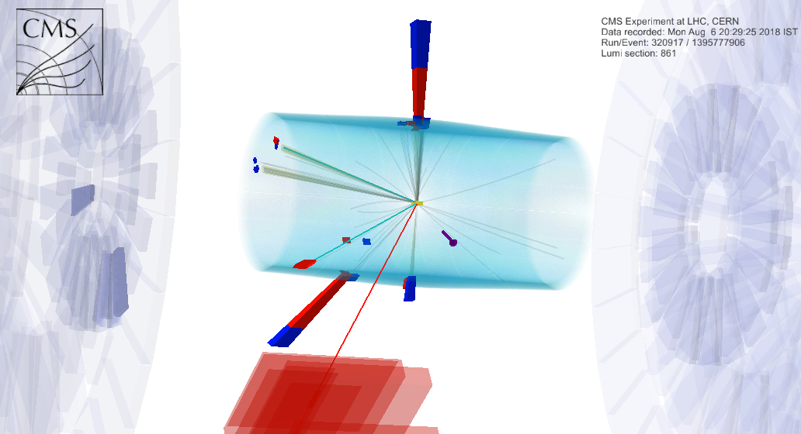
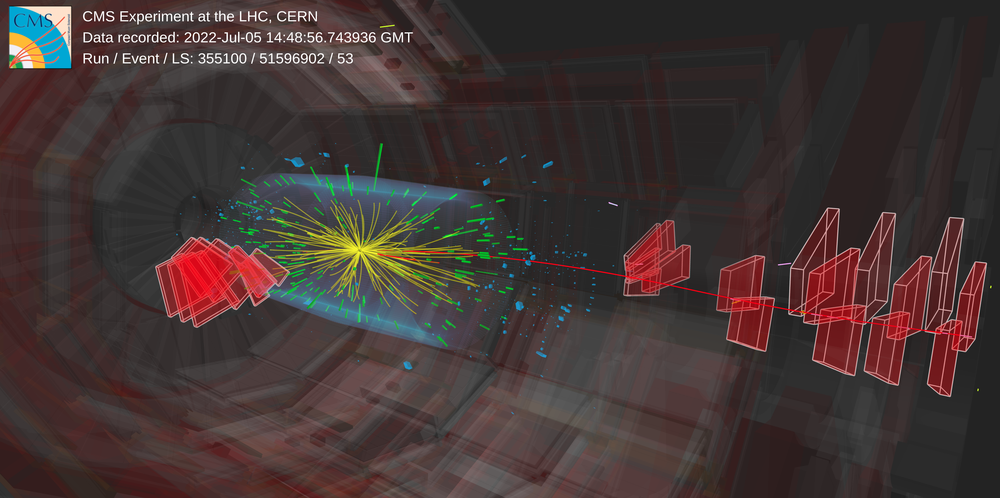
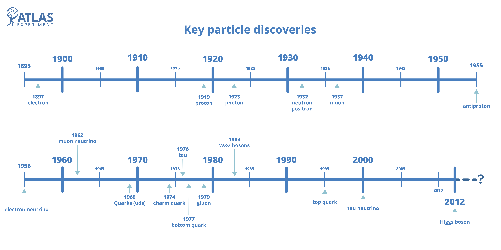

I'm a graduate student at Indian Institute of Science Education and Research, Pune, India. I'm working with Dr. Sourabh Dube for my Ph.D. in Experimental High Energy Physics. My work focuses on exploring beyond the standard model (BSM) physics signatures with the help of machine learning techniques using the high energetic proton-proton collisions recorded at CMS experiment and dedicated CMS tracking software improvements for high luminosity phase of LHC.
Apart from doing research, I am an amateur photographer. You may find a glimpse of it in my blogs. My enthusiasm for riding a bike has grown a lot in recent years. I often go to the western ghats near Pune or the city to experience the local culture, food and meeting people. I follow and play various sports. I'm an Argentina and Barcelona fan.

CMS recorded event with an electron, muon and tau lepton (used in our analysis)
CMS silicon tracker

First pp collision at 13.6 TeV (2022)

Discovery timeline of particles (credit: ATLAS)
Research
Search with physics dataset
Primarily, I search for beyond the standard model (BSM) phenomena in lepton final states. I was a part of the team searching for BSM phenomena in multilepton final states in a model independent way as well as targeting specific BSM models such as Vector-like leptons, seesaw or lepto-quark using machine learning (ML). Currently, I am expanding the search including more hadronic activity in the event and less leptonic activity to target low mass VLLs. I use ML techniques to enhance the sensitivity of the search including Boosted Decision Tree (BDT) or Deep Neural Network(DNN) using as a classifier.
Tracking Software at CMS
I also work on the implementation of the phase 2 tracker geometry and phase 2 tracking in CMS Fast Simulation package for High Luminosity-LHC upgrade to facilitate the faster production of Monte Carlo(MC) events generation at HL-LHC.
Learning physics using latent space representation of HEP dataset
Investigating the hidden patterns in multidimensional data using PCA, UMAP, and Autoencoder
in the context of lepton classification using CERN Open Data. Developing tools using these
techniques for classification tasks for statistically limited and asymmetric datasets.
Using Generative Adversarial Network (GAN) and dimension reduction techniques to speed up training time and minimise the computing resources. I developed this in the context of simulating events where W boson is produced with one or more jets and with Z boson at LHC. This results into one master thesis and a funded HSF project.
B-tagging contact position in EXOTICA group
Reviewing the usage of heavy flavor tagging in the CMS EXOTICA analyses and helping analyzers
with the implementation of b-tagging tools if required in liaison with CMS b-tagging object group
(reviewed more than 40 analyses).
Publications
Here are some of the selected publications:
Constraining the Vector-like electron,muon and tau models reinterpreting ATLAS √s = 8 TeV multilepton search. Manuscript in preparation
Review of searches for vector-like quarks, vector-like leptons, and heavy neutral leptons in proton-proton collisions at √s = 13 TeV at the CMS experiment. CMS-EXO-23-006
Search for dilepton resonances from decays of (pseudo)scalar bosons produced in association with
a massive vector boson or top quark anti-top quark pair at √s = 13 TeV. The CMS Collaboration,CMS-PAS-EXO-21-018
Inclusive nonresonant multilepton probes of new phenomena at √s = 13 TeV. The CMS Collaboration, Phys.Rev. D 105, 112007 (2022))
See the full publication list in iNSPIRE HEP
Teaching assistantship
Here are some of the courses I took as TA:
Machine Learning and its physics application(PH6232) github | Spring 2023
(Partially taught with Sourabh and code maintainer)
Lectures on Feynman diagrams (EHEP Mini-Course) | July 2022
World of Physics : Quantum Mechanics(PHY 202) | Spring 2020
Physics lab instructor in INSPIRE Camp held at IISER Pune | Jan 2020
BSMS second year experimental lab(PHY 221) | Fall 2019
BSMS first year experimental lab(PHY 121) | Spring 2019
Contact
Feel free to reach out to me. I'm always up for a conversation. Email is preferred as I rarely check my LinkedIn or twitter.
Office: A365
Main Building, Physics wing
Indian Institute of Science Education and Research, Pune
Dr. Homi Bhabha Road, 411008, Pune, Maharastra, India